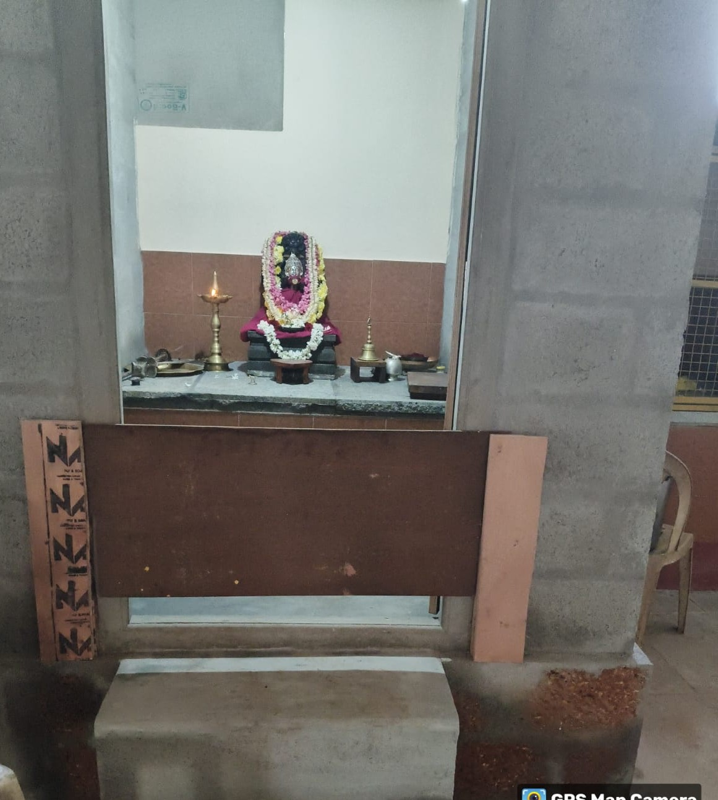
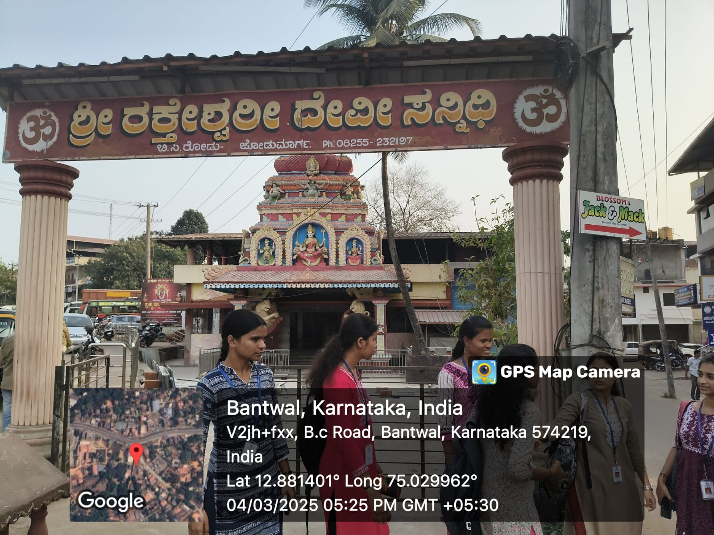

📍 Location
The temple is located in Bantwal taluk, near B C Road on NH‑48 in Dakshina Kannada, Karnataka, approximately 38 km northeast of Mangalore.

The temple is located in Bantwal taluk, near B C Road on NH‑48 in Dakshina Kannada, Karnataka, approximately 38 km northeast of Mangalore.
Goddess Rakteshwari—a fierce form of the Divine Mother, identified with Adi Parashakti or Durga Parameshwari. She is revered as both a protective and warrior goddess in Tulu Nadu.
Tulu Nadu Tradition: Worship of Rakteshwari is deeply rooted in Parashuramakshetra.
Folk & Tribal Roots: Her worship includes fierce rituals, sometimes involving meat or wine offerings.
Mythological Ties: Legends mention her battle with demons like Andhakasura.
Popular Events: Annual Shobhayatre processions with Yakshagana, tiger dances, music, and more.
Two-time pooja daily: morning and evening.
Free afternoon annasantarpana (meals for devotees).
Special celebrations during Navaratri and Karthika Masa.
Traditional cultural events like Yakshagana and Hulivesha are held during annual jathre.

